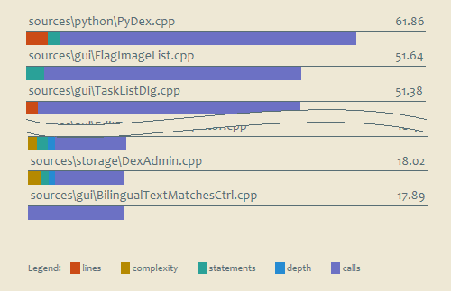
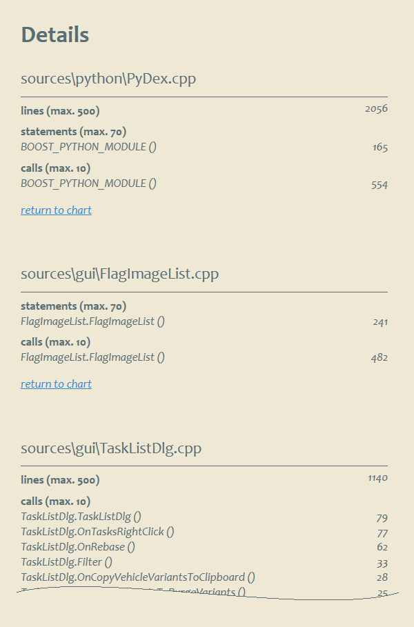

risorse | toxicity
Il Toxicity Chart è un istogramma a barre impilate che mette in evidenza i file sorgente più problematici: ogni segmento è associato ad una metrica, ed è tanto più lungo quanto più fuori tolleranza è la relativa metrica.
Il Toxicity Chart nasce per i progetti Java[3], io ho cercato di adattare l'idea originale al C++.
L'autore sfrutta l'utility Checkstyle per ricavare le misure di progetto; SourceMonitor (qui un esempio di file di progetto) produce un insieme molto più ristretto di metriche, riassunte nella seguente tabella di corrispondenza:
| Checkstyle | SourceMonitor |
|---|---|
| File Length | Lines |
| Class Fan-Out Complexity | Calls(!?) |
| Class Data Abstraction Coupling | n.d. |
| Anon Inner Length | n.d. |
| Method Length | Statements |
| Parameter Number | n.d. |
| Cyclomatic Complexity | Complexity |
| Nested If Depth | ~Maximum Block Depth |
| Nested Try Depth | n.d. |
| Boolean Expression Complexity | n.d. |
| Missing Switch Default | n.d. |
Il tasso di “tossicità” di un file rispetto ad un particolare aspetto – metrica – si determina sommando tutte le occorrenze al di sopra di una soglia predefinita, e normalizzando il risultato rispetto alla soglia stessa, per permettere la successiva aggregazione a livello di file.
Nota: il Toxicity Chart originale usa la classe come livello di aggregazione delle metriche; in questo caso si usa il file, perchè esso è il livello di granularità utilizzato nei report di SourceMonitor. La differenza diventa marginale se il progetto C++ usa definire una classe per ogni file.
Le soglie adottate dall'autore del Toxicity Chart sono le seguenti:
| Metrica | Soglia |
|---|---|
| File Length | 500 |
| Class Fan-Out Complexity | 30 |
| Class Data Abstraction Coupling | 10 |
| Anon Inner Length | 35 |
| Method Length | 30 |
| Parameter Number | 6 |
| Cyclomatic Complexity | 10 |
| Nested If Depth | 3 |
| Nested Try Depth | 2 |
| Boolean Expression Complexity | 3 |
| Missing Switch Default | 1 |
Volendo conformarsi a questi valori, le costanti che regolano il funzionamento dello script Python toxicity.py – che si occupa di deteminare le tossicità a partire dai file CSV prodotti da SourceMonitor – vanno così impostate:
MAX_LINES = 500 MAX_STATEMENTS = 30 MAX_COMPLEXITY = 10 MAX_MAXIMUM_BLOCK_DEPTH = 3 MAX_CALLS = None
Bisogna tener conto che queste soglie sono significative nel contesto di Java; fortunatamente, in rete si trovano analoghe proposte specifiche per il C++:
Gli sviluppatori di ROS hanno compilato una tabella comparativa[1] delle soglie delle principali metriche C++ disponibili on-line (HIS indica l'«Hersteller Initiative Software – Manufacturer's software initiative», KTH il «Royal Institute of Technology, Sweden», UoA la «University of Akureyri in Iceland»):
| Metrica | Ente | Min | Max | |
|---|---|---|---|---|
| Comment to code ratio | NASA | 0.2 | 0.3 | |
| HIS | 0.2 | - | ||
| UoA | 0.2 | 0.4 | ||
| ROS | 0.2 | - | ||
| Cyclomatic complexity | NASA | 1 | 10 | |
| HIS | 1 | 10 | ||
| KTH | 1 | 15 | ||
| ROS | 1 | 15 | ||
| Number of executable lines | NASA | 1 | 50 | |
| HIS | 1 | 50 | ||
| HTK | 1 | 70 | ||
| ROS | 1 | 70 | ||
| Number of function calls | HIS | 1 | 7 | |
| KTH | 1 | 10 | ||
| ROS | 1 | 10 | ||
| Maximum nesting of control structures | HIS | n/a | 4 | |
| KTH | n/a | 5 | ||
| ROS | n/a | 5 | ||
| Estimated static path count | HIS | 1 | 80 | |
| KTH | 1 | 250 | ||
| ROS | 1 | 250 | ||
| Coupling between objects | NASA | 5 | ||
| ROS | 0 | 5 | ||
| Number of immediate children | UoA | n/a | 10 | |
| ROS | 0 | 10 | ||
| Weighted methods per class | NASA | n/a | 100 | |
| UoA | 1 | 50 | ||
| ROS | 1 | 100 | ||
| Deepest level of inheritance | NASA | n/a | 5 | |
| UoA | n/a | 5 | ||
| ROS | n/a | 5 | ||
| Number of methods available | NASA | 1 | 20 | |
| ROS | 1 | 20 | ||
Segue un esempio di configurazione ROS-conforme:
MAX_LINES = 500 MAX_STATEMENTS = 70 MAX_COMPLEXITY = 15 MAX_MAXIMUM_BLOCK_DEPTH = 5 MAX_CALLS = 10
Nel loro studio riguardante la determinazione della sogliatura ottimale di un insieme di metriche, usano i seguenti valori di riferimento:
| Metrica | Soglia |
|---|---|
| Cyclomatic Complexity | 10 |
| Nested Block Depth | 5 |
| Number of Function Calls | 5 |
| Number of Statements | 50 |
Per adottare queste soglie è sufficiente modificare le costanti come segue:
MAX_LINES = 500 MAX_STATEMENTS = 50 MAX_COMPLEXITY = 10 MAX_MAXIMUM_BLOCK_DEPTH = 5 MAX_CALLS = 5
L'implementazione attuale è configurata con le soglie più tolleranti:
MAX_LINES = 500 MAX_STATEMENTS = 70 MAX_COMPLEXITY = 15 MAX_MAXIMUM_BLOCK_DEPTH = 5 MAX_CALLS = 10
Lo script toxicity.cmd si occupa di lanciare SourceMonitor e conseguentemente la procedura Python in modo da ottenere il report XML finale in un unico passo. Una trasformazione XSLT e un foglio di stile CSS rendono il prospetto in forma di pagina HTML. Lo script si aspetta di trovare questi due file nella cartella ./templates.
Aggiornamento [6/12/2013]
Aggiunta la sezione Details che riporta, per ogni file, le metriche fuori norma:
Pagina modificata il 06/12/2013